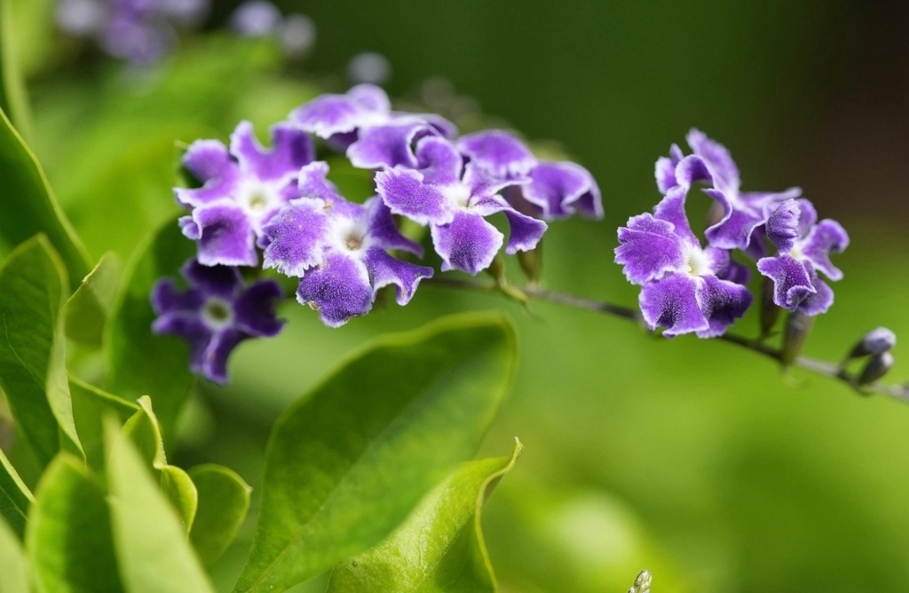

- Skyflower puts on a striking two-color show — delicate sky-blue to purple flower sprays and drooping clusters of bright golden-orange berries appear on the same plant at the same time.
- Those cheerful golden berries are highly toxic to mammals, including dogs and cats — a serious catch hiding behind an appealing look.
- The nectar-rich flowers are an exceptional, near year-round draw for Florida butterflies and hummingbirds, making this one of the garden's hardest-working pollinator shrubs.
- The arching, sometimes thorny stems give the shrub a graceful, fountain-like weeping shape — beautiful, but occasionally biting.
Native to the Caribbean, Mexico, and Central and South America, Skyflower thrives in the warmth of Florida's climate. It is widely cultivated as a fast-growing ornamental hedge or standalone specimen, valued for its fountain-like habit and virtually nonstop blooming cycle in our region.
- Skyflower (Duranta erecta) is a favorite for its long bloom and lively color contrast. Loose, cascading sprays of small, five-lobed flowers in sky blue, lavender, or purple appear nearly year-round in Florida's warmth, and because flowering and fruiting overlap, a plant often displays flowers and shining golden-orange berries simultaneously.
- Those berries carry a serious warning. Despite looking like edible fruit, the berries and leaves are toxic, containing saponins, iridoid glycosides, and other compounds; a historically recorded fatal poisoning of a child and documented severe poisonings in dogs and cats underscore the risk. It is a plant to enjoy with eyes, not mouths.
- For wildlife it is a strong performer — the nectar-rich flowers are reliable butterfly and hummingbird draws — and its arching, sometimes lightly thorny stems give it a graceful, fountain-like shape that suits hedges and specimen plantings alike.
The nectar-rich flowers are an exceptional, near year-round draw for butterflies and hummingbirds, making this one of the garden's better pollinator shrubs. Some songbirds can safely consume the berries that are toxic to mammals, but the plant's primary wildlife value is as a nectar source for pollinators.
An arching, sometimes thorny evergreen shrub with a graceful, weeping habit.
Loose, cascading sprays of small, five-lobed, sky-blue to purple flowers much of the year.
Clusters of round, glossy, golden-orange drupes — attractive but toxic.
Oval, light to medium green, opposite, sometimes finely toothed.
Blue-purple flower sprays and golden berry clusters together on an arching shrub. The simultaneous flowers-and-berries display is the signature — and a cue to keep the berries away from children and pets.
Do not eat any part of this plant.
Despite the appealing look of the berries, the berries and leaves contain saponins and iridoid glycosides; a historically recorded child fatality and other poisonings underscore the risk.
Keep the tempting berries away from children.
It's toxic to dogs and cats too — ingestion of berries or foliage can cause drowsiness, seizures, vomiting, diarrhea, and internal bleeding, effects documented in veterinary cases.
Keep pets away from fallen berries.


- © Rhonda Olschefskie (CC-BY-NC), via iNaturalist
- © teschaim (CC-BY-NC), via iNaturalist
- © Randall Carter (CC-BY-NC), via iNaturalist